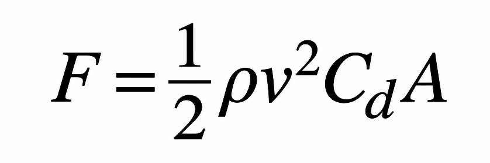
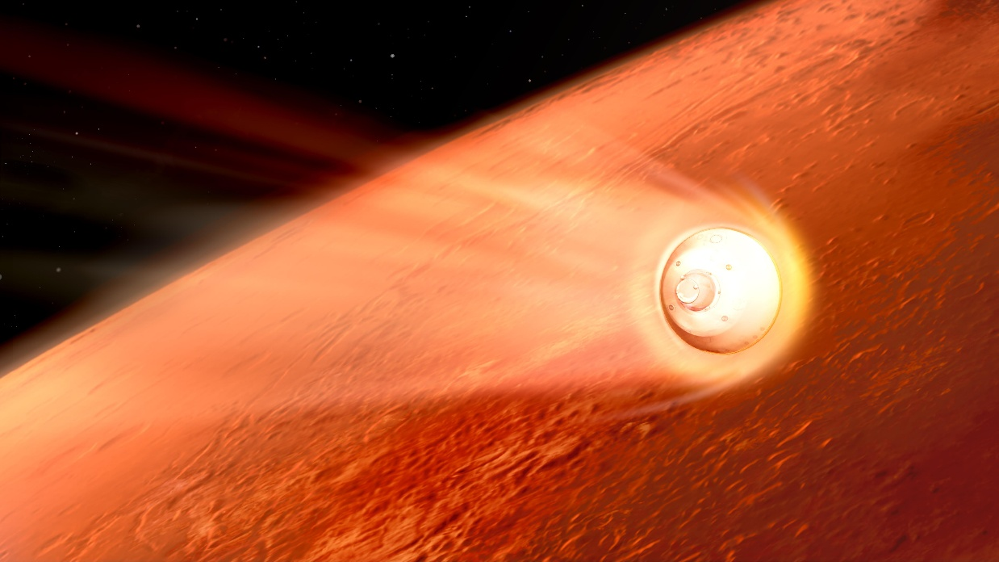

University of Surrey - ENG0018 Conference Project
URN: 6971263
Landing a spacecraft on the Martian surface presents a variety of significant engineering challenges due to the planet’s thin atmosphere, high entry velocities and limited opportunities for communication during the descent process. The level of aerodynamic braking produced by the Martian atmosphere is insufficient for parachutes alone to be able to decelerate a loaded spacecraft to a suitable landing speed. Therefore, engineers have had to develop complex landing systems combining heat shields, supersonic parachutes and rocket propulsion. This article aims to explore the physical challenges of an entry into the Martian atmosphere, examine the landing techniques used by the rovers NASA has landed on Mars, and discusses the limitations that the current level of technology has on future human exploration. We must understand all of these challenges in order to develop safer and more capable spacecraft which in future missions could deliver heavy payloads to the Martian surface to allow for scientific research.
Mars has for a long time been the major target for space exploration due to its geological history and the potential evidence of past microbial life. In order to do this spacecraft must survive a rapid descent through the atmosphere before landing safely on the surface.
This process which is known as Entry, Descent and Landing (EDL), requires a variety of engineering systems both aboard the craft and back on Earth to operate concurrently in a controlled sequence. This process is described by NASA as the seven minutes of terror, reflecting the speed and complexity of the landing procedure (NASA, no date).
One of the greatest difficulties when landing on Mars is its atmospheric density. The Martian atmosphere is 100 times thinner than Earth’s which makes conventional atmospheric braking which would be possible on Earth significantly less effective.
The Aerodynamic drag, which acts against a spacecraft is expressed as:

Equation 1: Aerodynamic drag force.
F represents drag force
ρ represents atmospheric density
V represents Velocity
Cd represents the drag coefficient
A represents the Spacecraft CSA
Because Mars has a much lower atmospheric density than earth, a spacecraft would experience less drag at the same velocity and CSA. However the atmosphere is dense enough to generate a considerable amount of heat during the entry, which requires the spacecraft to be fitted with protective heat shielding.
This creates an unusual engineering problem:The atmosphere is dense enough to make entry dangerous
But
Is too thin for parachutes alone to slow the craft for a safe landing.
Before landing, a spacecraft must dramatically reduce its velocity. NASA’s Perseverance rover entered the Martian atmosphere while travelling at 19,500 kph (NASA Jet Propulsion Laboratory, 2020).
At these speeds, compression and the heating of the gases in the air surrounding the spacecraft produce extreme thermal conditions. Without protection, sensitive technology and navigational equipment on board could be damaged or rendered too unstable to be accurate. Engineers therefore use an aeroshell incorporating a heat shield, which protects the spacecraft while also generating drag. Many concept landing systems use ablative shields which dissipate heat while they break down.
Heat-shield design is a delicate art of balancing total mass of spacecraft against the thermal protection of the interior components. Additional shielding increases the level of protection of existing equipment but at the same time limits the total amount of equipment possible to carry onboard.
NASA’s Perseverance mission included sensors used to measure the temperature and pressure at different points of entry. Data from these instruments can help to estimate the level of shielding required for the amount of equipment needed as well as improve the efficiency of existing heat shields (NASA, 2021).

Figure 1: Illustration of NASA's Perseverance rover decelerating through the Martian atmosphere. The heat shield protects the spacecraft from extreme temperatures during atmospheric entry. Source: NASA/JPL-Caltech (2020). See image reference.